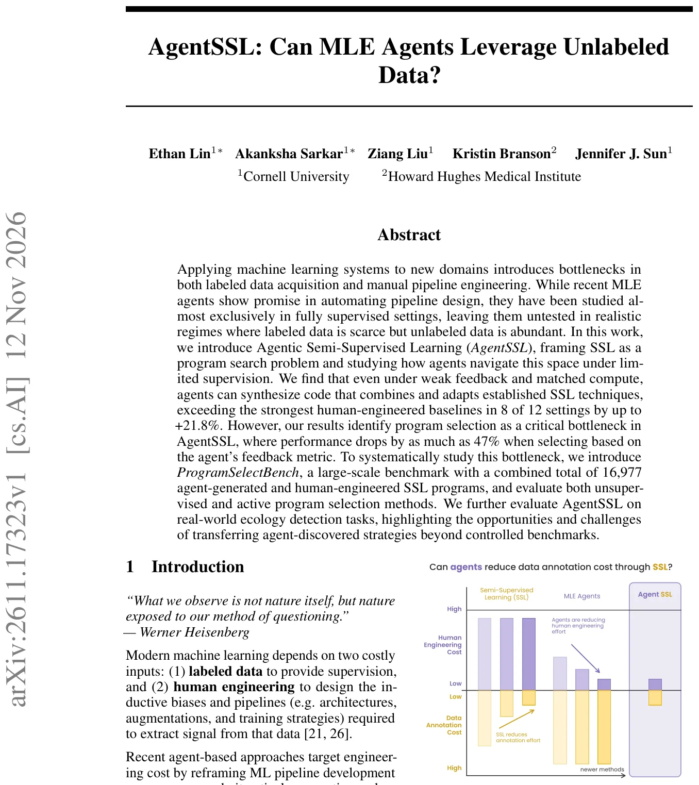
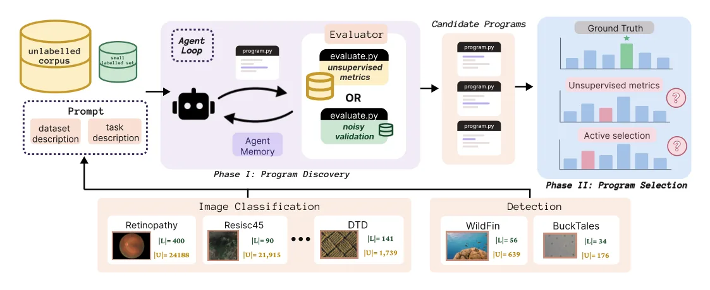
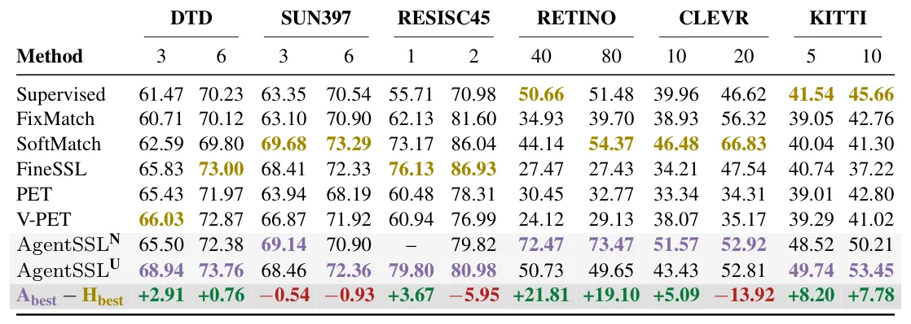
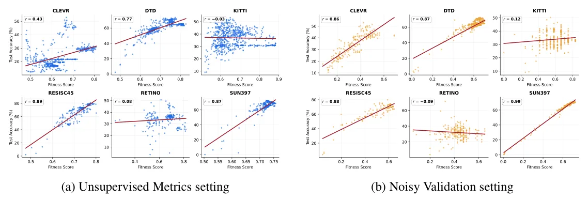

O problema da dupla escassez
O aprendizado de máquina moderno depende de dois insumos caros: dados rotulados e engenharia humana. A rotulagem é custosa e lenta, enquanto o design de pipelines (arquiteturas, augmentations, estratégias de treino) exige expertise específica. Recentemente, agentes baseados em LLMs surgiram para automatizar a engenharia, tratando o desenvolvimento de ML como um problema de busca de programas. No entanto, esses agentes foram avaliados quase exclusivamente em cenários totalmente supervisionados, onde milhões de rótulos estão disponíveis.
Na prática, muitos domínios reais — como descoberta científica, diagnóstico médico e monitoramento ambiental — sofrem de escassez de dados rotulados, mas abundância de dados não rotulados. O Aprendizado Semi-Supervisionado (SSL) foi criado para explorar essa assimetria, mas métodos SSL são notoriamente sensíveis à distribuição dos dados e exigem tuning manual intenso. A pergunta central deste trabalho é: agentes podem reduzir tanto o custo de engenharia quanto o de anotação ao automatizar o SSL?
Os autores introduzem o AgentSSL, formulando a aplicação de SSL como um problema de busca de programas. Eles decompõem o desafio em duas etapas: descoberta do programa (o agente gera e refina código) e seleção do programa (escolher o melhor candidato sem um grande conjunto de validação rotulado). Esta estrutura permite estudar como agentes navegam no espaço de design sob supervisão limitada.

Como o AgentSSL funciona
O framework AgentSSL utiliza o AIRA-Dojo como base para a busca agéntica. O agente recebe uma descrição da tarefa, um pequeno conjunto de dados rotulados (L) e um grande corpus não rotulado (U). Ele então propõe programas executáveis que mapeiam esses dados para um modelo preditor. Cada candidato é executado em um ambiente isolado (Apptainer), e os logs, erros e uma métrica de fitness são retornados ao agente para guiar iterações subsequentes.
Para garantir comparabilidade, a busca do agente é restrita a backbones pré-treinados (CLIP ViT-B-16 e DINOv2-B) e técnicas de fine-tuning eficiente (LoRA). Isso impede que o agente 'reinvente a roda' em infraestrutura e force a exploração de estratégias SSL específicas, como pseudo-labeling, consistência de augmentations ou propagação de rótulos em grafos. A busca inicia com um 'warm-start' supervisionado simples, focando a exploração nas nuances do SSL.
Os autores avaliam dois tipos de feedback para guiar a busca: métricas não supervisionadas (U) e validação ruidosa (N). As métricas não supervisionadas avaliam propriedades intrínsecas do modelo ou dos dados sem usar rótulos externos. A validação ruidosa usa um pequeno subconjunto de dados rotulados, mas introduz ruído ou viés para simular cenários onde a validação perfeita não está disponível. O agente utiliza uma política de busca gulosa (greedy) para selecionar os melhores candidatos a cada passo.

Resultados: agentes superam humanos na descoberta
Quando avaliados com acesso ao conjunto de teste (oracle), os programas descobertos pelo AgentSSL são competitivos com os melhores métodos SSL projetados por humanos. Em 8 dos 12 cenários testados (variações de datasets e configurações de 'shots', ou seja, quantidade de rótulos por classe), a melhor solução do agente superou a melhor baseline humana, com ganhos de até +21.8%. Isso demonstra que agentes podem, sim, sintetizar código que combina e adapta técnicas estabelecidas de SSL, mesmo sob feedback fraco.
Os baselines humanos incluem métodos clássicos como FixMatch e SoftMatch, além de estratégias modernas para foundation models como FineSSL, PET e V-PET. O fato de o agente alcançar ou exceder esses resultados sugere que o espaço de design do SSL é navegável por LLMs, mesmo quando o feedback direto de performance não está disponível durante a busca.
Contudo, é crucial notar que esses resultados de 'oracle' escondem o desafio prático. Na vida real, não temos acesso ao teste para escolher o melhor programa. Precisamos selecionar o programa baseado apenas no feedback interno da busca. É aqui que a complexidade do AgentSSL se revela.

O gargalo crítico: seleção de programas
O problema central identificado no paper é a seleção de programas. Quando os autores avaliam a performance dos programas escolhidos pelo agente usando apenas as métricas de feedback (sem oracle), a performance cai drasticamente. Em alguns casos, a queda chega a 47% em relação à performance oracle. Isso ocorre porque as métricas de feedback (especialmente as não supervisionadas) têm baixa ou até correlação negativa com a precisão real no teste.
A Figura 7 ilustra essa desconexão: pontos representam programas gerados durante a busca, e o eixo X mostra a métrica de feedback, enquanto o eixo Y mostra a precisão real. A falta de alinhamento significa que o agente pode estar otimizando para uma métrica que não reflete a utilidade prática do modelo. Isso é particularmente preocupante em SSL, onde as suposições de distribuição dos dados são frequentemente violadas.
Para estudar isso sistematicamente, os autores criam o ProgramSelectBench, um benchmark com 16.977 programas (gerados por agentes e humanos). Eles avaliam métodos de seleção não supervisionados e ativos. A conclusão é clara: a seleção baseada apenas em métricas internas é insuficiente para garantir a qualidade do pipeline descoberto.

Mitigação: seleção ativa
Diante da falha das métricas puramente não supervisionadas, os autores investigam a seleção ativa. Em vez de depender apenas de métricas internas, eles reservam uma parte dos dados rotulados (50%) especificamente para selecionar o melhor programa entre os candidatos gerados. Isso é comparado a treinar com 100% dos rótulos e usar seleção não supervisionada.
Os resultados mostram que a seleção ativa oferece ganhos significativos onde as métricas não supervisionadas falham. No entanto, há um trade-off: reservar rótulos para seleção reduz a quantidade de dados disponíveis para o treino do modelo final. Em cenários onde as métricas não supervisionadas funcionam bem, a seleção ativa pode até piorar a performance devido à perda de dados de treino.
Métodos de seleção ativa como IID, ActiveTesting e VMA performam bem em média, mas com alta variância. Métodos probabilísticos como CODA e ModelSelector são mais estáveis, mas podem convergir mais lentamente. A escolha da estratégia de seleção depende criticamente da qualidade da métrica de feedback e da disponibilidade de rótulos.
Análise: aproveitando dados não rotulados
Os autores também verificam se os programas descobertos pelo agente realmente utilizam os dados não rotulados. Ao fixar o melhor programa e variar o tamanho do corpus não rotulado, observam que a performance geralmente melhora com mais dados não rotulados. Isso confirma que o agente não está apenas aprendendo sobreajustado aos poucos rótulos disponíveis, mas está efetivamente explorando a estrutura dos dados não rotulados, como esperado em SSL.
A análise qualitativa dos programas gerados revela que o agente tende a combinar técnicas existentes de forma não trivial. Por exemplo, ele pode aplicar diferentes augmentations em vistas diferentes do mesmo dado ou usar pseudo-labels com limiares dinâmicos. Essa capacidade de composição é o que permite ao agente superar baselines fixas, que são projetadas para cenários mais gerais.
Transferência para o mundo real
Além dos benchmarks controlados, o AgentSSL foi avaliado em tarefas reais de detecção em ecologia. Esses dados são tipicamente desbalanceados e com rótulos escassos. Os resultados mostram que as estratégias descobertas pelo agente podem ser transferidas para domínios reais, mas com desafios adicionais. A distribuição dos dados naturais é mais complexa e ruidosa do que a dos benchmarks, exigindo uma seleção de programa ainda mais robusta.
Isso destaca a oportunidade e a dificuldade do AgentSSL: ele pode automatizar a adaptação de SSL para novos domínios, mas a confiança no pipeline final depende criticamente de um mecanismo de seleção confiável. Sem um bom validador, o risco de escolher um pipeline ineficaz é alto.
Limitações e conclusões
O paper admite limitações claras. A busca do agente é restrita a backbones específicos (CLIP e DINOv2) e técnicas de fine-tuning, o que pode não cobrir todo o espaço de design possível. Além disso, o custo computacional da busca é alto; embora escalado em relação aos baselines, ainda requer horas de GPU por dataset.
A principal contribuição do AgentSSL não é apenas mostrar que agentes podem escrever código SSL, mas expor a fragilidade da validação em cenários semi-supervisionados. A descoberta de que a seleção de programas é o gargalo crítico é um insight valioso para a comunidade de AutoML e SSL. Futuros trabalhos devem focar em métricas de validação mais robustas ou em estratégias de seleção ativa mais eficientes.
Em resumo, agentes podem reduzir o custo de engenharia em SSL, mas não eliminam a necessidade de validação cuidadosa. A automação da descoberta é promissora, mas a automação da seleção ainda é um problema aberto.
O que fica
- Agentes descobrem programas SSL que superam humanos em 8 de 12 cenários, mesmo com feedback fraco.
- O gargalo principal não é a descoberta, mas a seleção: métricas de feedback podem falhar, causando queda de 47% na performance.
- A seleção ativa (usando um subconjunto de rótulos para escolher o melhor modelo) mitiga falhas de métricas não supervisionadas.
- AgentSSL funciona em domínios reais como ecologia, mas exige cuidado na validação quando os dados rotulados são escassos.
Paper original: AgentSSL: Can MLE Agents Leverage Unlabeled Data?
Comentários
Nenhum comentário ainda. Seja o primeiro.